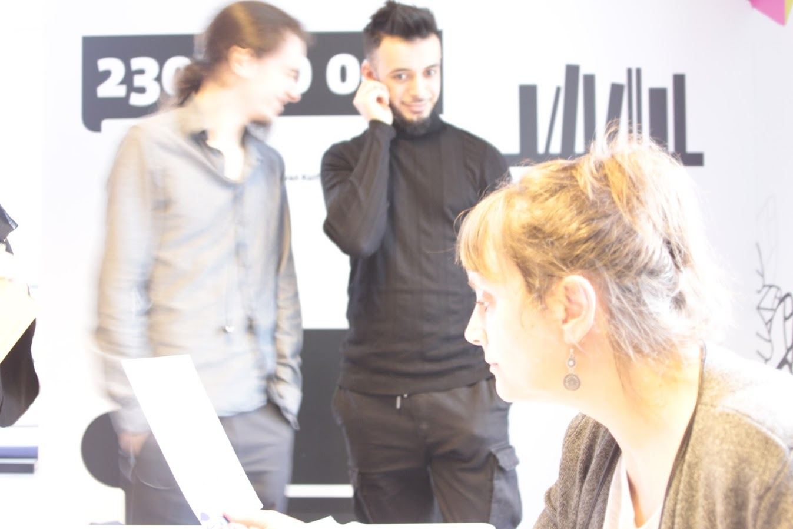
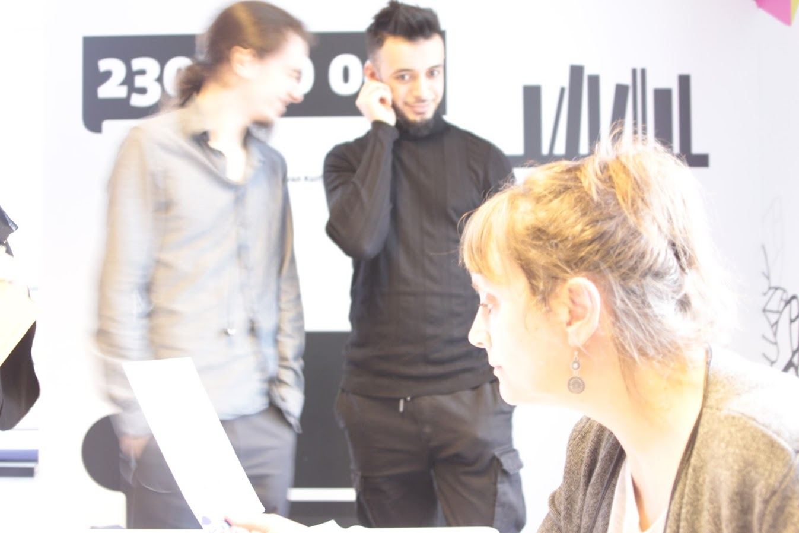

expo bruxelles
Partie découverte
Tout d'abord nous nous sommes réunis à l'accueil où nous attendons avec impatience ce qu'on va découvrir ; nous nous posions tous des questions… Qu’allions-nous découvrir ?
On sentait l'excitation monter et l'impatience nous guetter. Lorsqu’enfin une dame se présente à nous pour faire partager le lieu si attendu, nous la suivons à l'étage où tout commence.
La première chose qui me frappa ce sont des gens mystérieux venus de nulle part qui nous regardent, certains d’un air souriant et d'autres plus curieux.
J'étais ébloui ! Leur visage était si impactant. C’était là où je me rends compte que ce sont des personnes prises en photo qui sont exposées en grand format tout au long du couloir.
Au plus nous avançons plus nous découvrons ces nouveaux visages.
La guide nous assemble dans une pièce où nous nous sommes installés, prêts à l’écouter attentivement.
No pain. No game
Assez stressés… Dans l’endroit étrange et si inconnu.
La guide s’installe devant nous.
D’un air à fois accueillant et autoritaire elle se présente :
« Bonjour à tous,
Je me présente, je suis la maitresse de ces lieux et je viens vous présenter plusieurs énigmes que peu de personnes ont put résoudre….
Cela dit vous devriez choisir deux partenaires pour vous acquitter de ce défi. Attention : chaque équipe obtient une possibilité de ralentir ses adversaires avec une énigme supplémentaire. Choisis la bonne stratégie »
Excitation et inquiétude montent tout doucement ; l’atmosphère dans la pièce s’intensifie.
Difficile à dire.
Surtout qu’on ne se connaissait pas vraiment et de plus on était 18 dans cette aventure.
Mais je ne perdais pas espoir, au contraire !
Les équipes se forment, nous choisissons les noms des équipes ; tout le monde semble prêt.
Nous allons commencer.
La guide nous donne une carte pour chaque équipe et nous découvrons les énigmes.
Très vite je me sentis revivre mon enfance, revoyant le film Jumanji.
Inception
Nous avons pris place dans cette pièce sphérique, une sorte de machine posée au milieu ; L’écran nous affichait une liste de choses à découvrir.
Munis de nos casques audio, nous commençons à nous préparer afin de rentrer en rêve profond.
Qu’allons-nous découvrir ?
Suis-je prêt ?


Nous découvrons l’état des lieux, chaque pièce est unique, tout droit sortie d’un rêve imaginaire.
Vraiment inspirante ! Je redécouvre Bruxelles sous un autre angle. Les idées d’architecture m’ont vraiment plu ; D’ailleurs, je me suis retrouvé voir le film Inception ; où l'imagination fait place et toute règle physique est provoquée.
 
